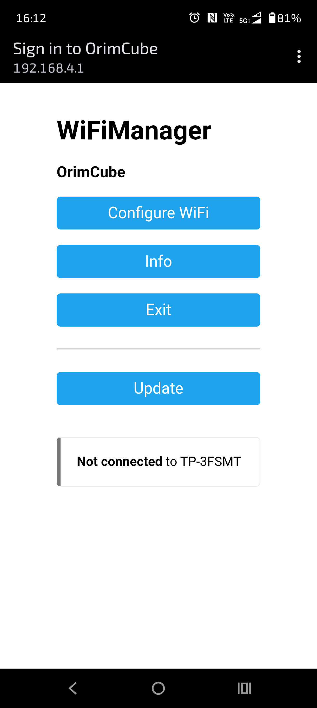
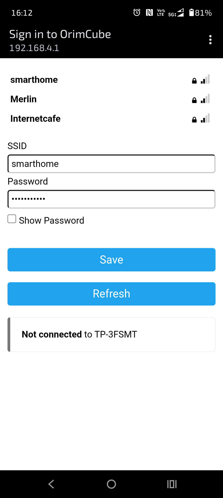
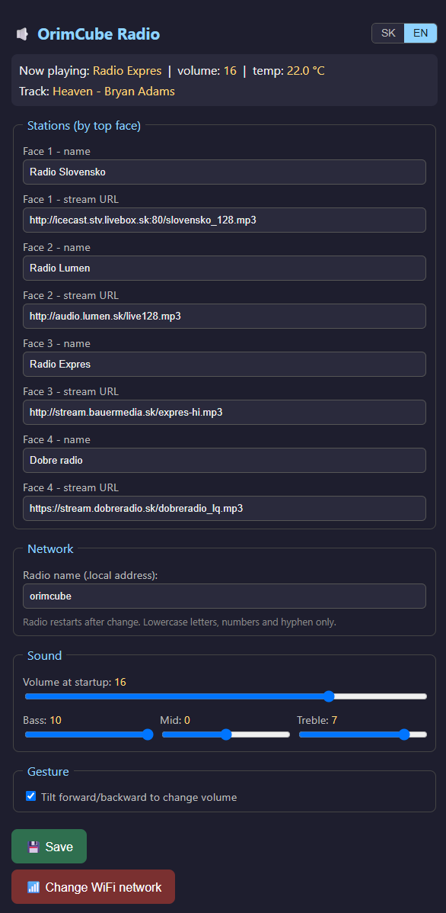

🔊 OrimCube Radio
Internetové rádio ovládané gúľaním drevenej kocky — bez tlačidiel, bez displeja.
Video
Pozri, ako OrimCube Radio funguje v praxi.
Čo to je
Ovládanie gestami
Polož kocku stenou hore = stanica. Nakloň = hlasitosť. Postav na bok = stlmenie.
Jednoduché pre každého
Žiadne menu ani tlačidlá. Navrhnuté pre seniorov aj deti.
Sledovanie teploty
Zabudovaný senzor sleduje teplotu vnútri drevenej skrinky.
Viac rádií naraz
Každé rádio má vlastný názov (.local) — koľko chceš v jednej sieti.
Návod na nastavenie
Prvé spustenie zaberie pár minút. Stačí ísť podľa krokov.
-
Zapoj rádio do napájania. Pri prvom zapnutí vytvorí vlastnú WiFi sieť
OrimCube. -
Na telefóne sa pripoj na sieť
OrimCube. Otvorí sa prihlasovacie okno (alebo zadaj192.168.4.1). - Ťukni na Configure WiFi, vyber svoju domácu sieť, zadaj heslo a ulož. Rádio sa reštartuje a pripojí.
-
Na tom istom WiFi otvor v prehliadači
http://orimcube.local— otvorí sa ovládací panel. - Pre každú zo 4 stien nastav názov stanice a jej stream URL. Ulož.
- Ovládaj kocku: stena hore = výber stanice, mierny náklon = hlasitosť, postavenie na bok = stlmenie.
-
Máš viac rádií? V sekcii Sieť zmeň názov (napr.
kuchyna) — rádio sa reštartuje a bude nakuchyna.local. - Zmena WiFi: tlačidlo Zmeniť WiFi sieť. Úplný reset WiFi: pri zapínaní podrž tlačidlo BOOT.

Prihlasovacie okno OrimCube (WiFiManager)

Výber siete a heslo

Ovládací panel v prehliadači
Ovládanie kockou
| Gesto | Akcia |
|---|---|
| Stena hore | Výber stanice 1–4 |
| Mierny náklon dopredu / dozadu | Hlasitosť + / − |
| Postavenie na bočnú stenu | Stlmenie zvuku (mute) |
Riešenie problémov
| Problém | Riešenie |
|---|---|
orimcube.local sa neotvára |
Použi IP adresu rádia — nájdeš ju v zozname zariadení svojho routera. |
| Stanica nehrá |
Skontroluj stream URL — musí to byť priama adresa streamu (napr. .mp3 / .aac).
|
| Po premenovaní rádio nereaguje |
Chvíľu počkaj — po zmene názvu sa reštartuje. Potom použi nový .local názov.
|
Máte záujem?
OrimCube Radio je autorský projekt Orimslav. Napíšte mi cez hlavnú stránku — rád poradím alebo postavím kus na mieru.